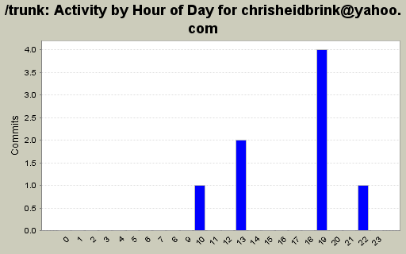
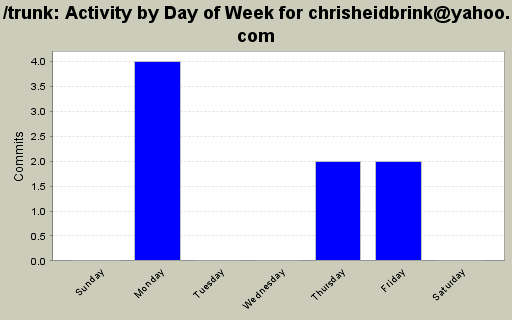
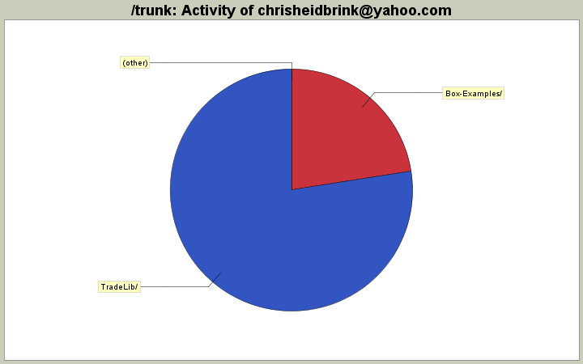

| Directory | Changes | Lines of Code | Lines per Change |
|---|---|---|---|
| Totals | 8 (100.0%) | 40 (100.0%) | 5.0 |
| TradeLib/ | 2 (25.0%) | 31 (77.5%) | 15.5 |
| Box-Examples/ | 4 (50.0%) | 9 (22.5%) | 2.2 |
| / | 2 (25.0%) | 0 (0.0%) | 0.0 |

deleting test chris_test.txt
0 lines of code changed in 1 file:
test for checking in
0 lines of code changed in 1 file:
Added set property to symbol
30 lines of code changed in 1 file:
added pctChange variable
2 lines of code changed in 1 file:
repeat:
should be same add as Added Bollinger.cs added TestBollinger.cs, had to add nunit.framework to the Box-Examples references and remove/add nunit.framework from the TestTradeLib references
4 lines of code changed in 2 files:
Added Bollinger.cs added TestBollinger.cs, had to add nunit.framework to the Box-Examples references and remove/add nunit.framework from the TestTradeLib references
4 lines of code changed in 2 files: